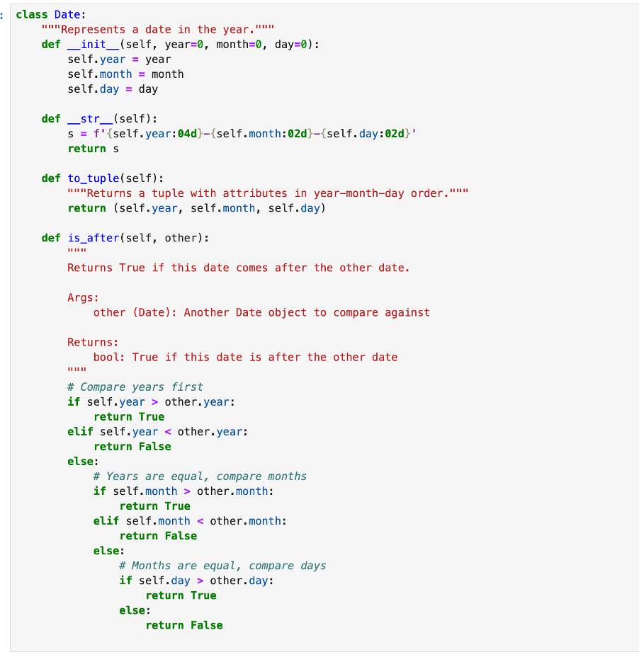
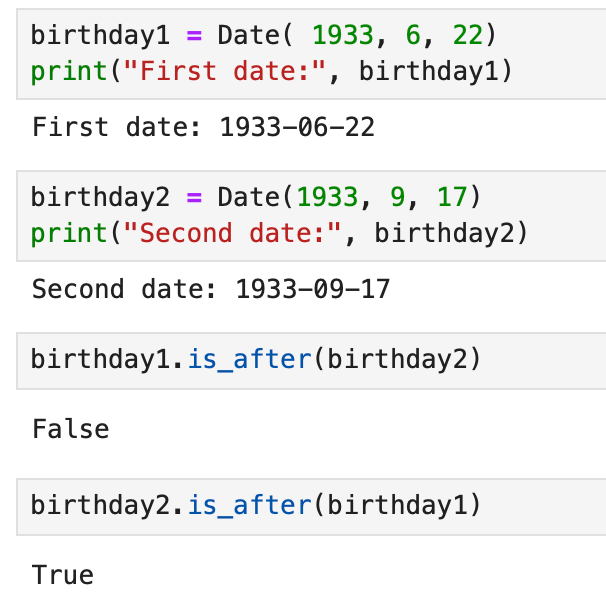

Unit 1: An Introduction to Python Programming and the OO Programming Paradigm
Welcome to Week 1. In this introduction to Python programming, we will gain an understanding of the evolution of programming languages towards object orientation, and beyond it in response to the challenges of programming in an object-oriented way.
Learning Overview
In this unit we shall:
- Examine what it means for a program to be object-oriented.
- Explore the syntax used to define a Python class.
- Investigate how to define different data types in Python.
On completion of this unit you will be able to:
- Describe the major features of an object-oriented program, including abstraction, inheritance, encapsulation, and polymorphism.
- Define a Python class.
- Define a variety of data types in a Python program and adapt the access modifier applied to each.
This unit gives exposure to the fundamental building blocks of a Python program, upon which advanced features will be built later.
Collaborative Discussion 1
Prioritising Key Factors that Influence Reusability in Object-Oriented Software
Reusability is a cornerstone of object-oriented (OO) software development, aiming to reduce development time, cost, and effort while improving maintainability. Padhy et al. (2018) identify several factors that influence software reusability, such as modularity, coupling, cohesion, documentation, and generality. After reviewing these factors, I believe that modularity, low coupling, and high-quality documentation are the most crucial priorities for creating truly reusable software components.
Firstly, modularity refers to the extent to which software components are divided into distinct and self-contained units such as modules or classes with single, clear responsibilities. As (Sommerville, 2016) emphasises, modular design simplifies maintenance, testing, and, most importantly, reuse. A module adhering to the Single Responsibility Principle (Martin, 2017) is inherently more portable and adaptable to new contexts than a monolithic, multi-purpose component. When classes follow the Single Responsibility Principle (SRP), they become more focused and easier to reuse.
Secondly, low coupling is a non-negotiable companion to modularity. It defines the degree of interdependence between modules. Padhy et al. (2018) highlight that metrics like Coupling Between Objects (CBO) are directly linked to reusability, as tightly intertwined code cannot be easily extracted. (Pressman and Maxim, 2020) confirm that low coupling enhances module independence, making code more flexible, portable and resilient to change, vital for reuse across different projects and evolving systems.
Finally, documentation quality becomes paramount. It includes clear API descriptions and usage examples. Clear documentation including class descriptions, usage examples, and design rationale supports comprehension, enables the practical implementation of reusable components and accelerates integration into new contexts (Padhy et al., 2018).
While factors like cohesion are important, they are often natural outcomes of prioritising modularity and low coupling. Therefore, by focusing on these three pillars, we create software that is not only technically sound but also practically and widely reusable.
References
Martin, R.C. (2017) Clean architecture: a craftsman's guide to software structure and design. Boston: Prentice Hall.
Padhy, N., Satapathy, S. & Singh, R.P. (2018) 'State-of-the-Art Object-Oriented Metrics and Its Reusability: A Decade Review', in: Satapathy, S.C., Bhateja, V. & Das, S. (eds.) Smart Computing and Informatics. Singapore: Springer, pp. 431-441.
Pressman, R.S. & Maxim, B.R. (2020) Software engineering: a practitioner's approach. 9th edn. New York: McGraw-Hill Education.
Sommerville, I. (2016) Software engineering. 10th edn. Harlow: Pearson.
Think Python Activity — Date Class & Methods
Exercise Brief
- Write a definition for a
Dateclass that represents a date (year, month, and day). - Write an
__init__method that takes year, month, and day and assigns them to attributes. Create an object for June 22, 1933. - Write
__str__to format the attributes asYYYY-MM-DD. - Write a method
is_after(self, other)that returnsTrueif one date comes after another. - (Hint) Add a
to_tuple()method returning(year, month, day)to simplify comparisons.


Reflection
- Encapsulation: behaviour (
__str__, comparisons) lives with the data. - Design choice:
to_tuple()makesis_afterconcise and testable. - Pythonic: tuple comparisons are lexicographic, matching year → month → day ordering.